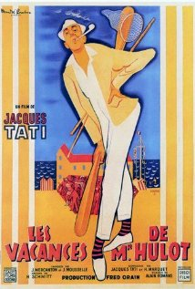

His favourite movies
 |
2001 - Space OdysseyHumanity finds a mysterious, obviously artificial, object buried beneath the Lunar surface and, with the intelligent computer H.A.L. 9000, sets off on a quest. | |
|  |
Monsieur HulotMonsieur Hulot comes to a beachside hotel for a vacation, where he accidentally (but good-naturedly) causes havoc. |
 |
AlienThe commercial vessel Nostromo receives a distress call from an unexplored planet. After searching for survivors, the crew heads home only to realize that a deadly bioform has joined them. |